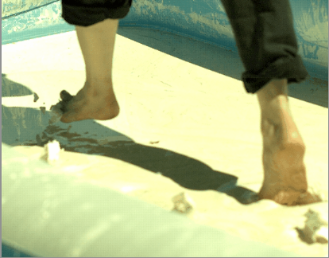

Shear thickening fluids
 |
{kind=link}
We have identified several connections between shear thickening and the jamming transition, where particles are packed just tightly enough to form a rigid structure. We found the strength of shear thickening is controlled by a critical packing fraction t that coincides with the jamming point such that the strength of shear thickening gets stronger closer to and diverges at this critical packing fraction [Brown & Jaeger, PRL (2009), Brown et al. (2011)]. In collaboration with Joe DeSimone's group at the University of North Carolina and Liquidia Technologies who can fabricate particles of different shapes, we have been able to show that confinement of rod-shaped suspensions to a few layers results in an ordered state and eliminates shear thickening, in contrast to the strong disorder and shear thickening at the jamming point [Brown et al. (2010)]. Since even small errors in packing fraction lead to large uncertainties near a critical point, we developed a technique to better resolve data near the critical point by using the critical shear rate as a reference instead of packing fraction [Maharjan and Brown (2019)].
For an overview of research in steady-state shear thickening, see my review [Brown & Jaeger (2014)], a video abstract, and short commentaries [Brown & Jaeger (2011), Brown (2013)].
Impact response
One of the most dramatic properties of shear thickening fluids is their strong response to impact. An example of this can be seen in the ability of a person to run on the surface of the fluid. Understanding of this phenomena may allow us to take advantage of the unique and impressive impact resisting properties of shear thickening fluids. Using controlled impact experiments, we have observed that a solid-like transiently jammed region propagates in front of an impact that is faster than a critical velocity. If the front of this jammed region reaches a solid boundary, then a solid-like region spans the system and can support a load like a solid [Maharjan et al. (2018)], [Allen et al. (2018)]. This structure is strong enough to explain the ability of a person to walk or run on the surface of cornstarch and water [Mukhopadhyay et al. (2018)]. Our recent work in collaboration with Marcelo Kallmann's group at the University of California, Merced shows that this and other phenomena long associated with shear thickening can be simulated with models that do not include shear thickening directly in the relation between shear stress and shear rate -- rather these phenomena may be more appropriately attributed to hysteresis in the rheology. We developed a low dimensional model in which the hysteresis comes from a combination of the time it takes for a transiently jammed region to propagate across the system and a relaxation time, in combination with a solid-like stiffness of the fluid [Ozgen et al. (2019)]. Our first measurements of a relaxation time reveal that while at low packing fractions it can be determined by the steady-state viscosity of the suspension, at high packing fractions it remains on the order of seconds, in contrast to expectations of the relaxation time going to zero in the limit of the jamming transition based on the behavior of the steady-state viscosity [Maharjan & Brown (2017)].
Funding: NSF DMR 1410157 (CMP)